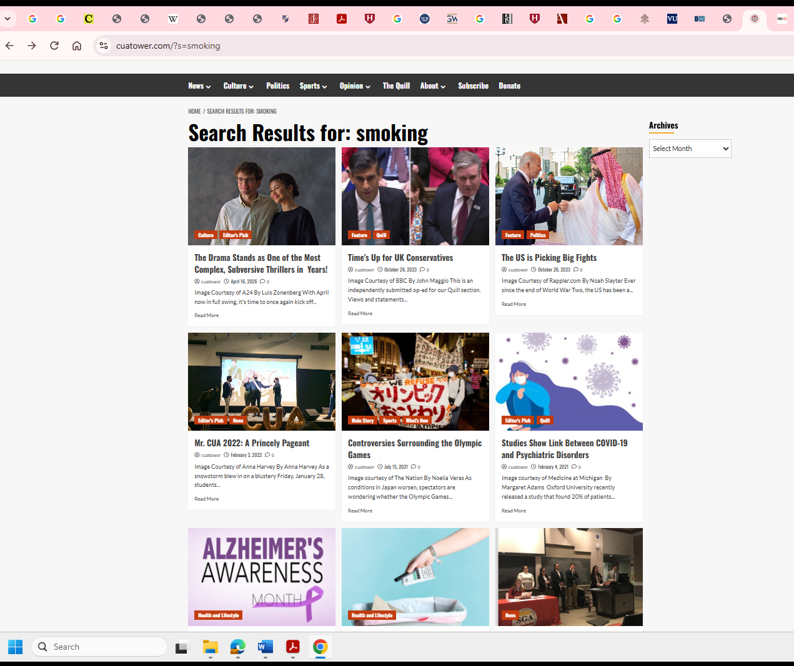
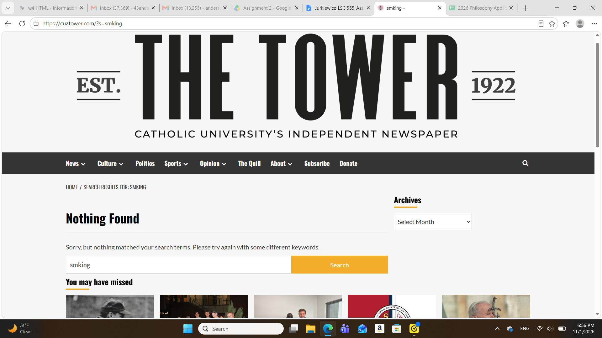

| Input | Output |
|---|---|
| Hovering cursor over a menu title on the homepage. In this case, the cursor hovers over the News section. | Hovering cursor over a menu title on the homepage. In this case, the cursor hovers over the News section. The dropdown menu appears with different sections to click on. In this case, there are four options: Campus; District; Student Government Association; Administration & Academics. |
| Clicking on the magnifying glass icon and typing in a search term into the search box. In this case, I typed in “smoking” and hit the search button. | A new page loads. The title “Search Results for: smoking” appears at the top of the search results, below which are tiles of different news stories with the term “smoking” in them. Each tile has the leading image, the title of the article, and the date of the article’s publication. |
| Selecting a month under the Archives section toward the bottom of the homepage. I selected “April 2022” from the dropdown menu. | A new page loads. The title “Month: April 2022” appears at the top of the search results. In the tiles of the individual different news stories that were published in April 2022 are not only the main image, title, and publication date of the article, but also two red tags that indicate which section of the newspaper it belongs to. |
| Starting from the page of the article “The Goodbye Garvey-Q,” I clicked on the newspaper heading The Tower, located at the top of the page. | This action took me back to the site’s homepage. |
Heuristic Analysis of the System According to Nielsen's Heuristics
I chose to perform a search for tobacco use. I used the following search terms: smoking; vaping; vape; cigarette; tobacco.
Below is my assessment of each of the 10 heuristics:
Visibility of system status: This could have been better. Although the website was very fast and responsive when I used it, the few times that it took a few seconds to load a new page there was no icon that indicated remaining load time.
Match between system and the real world: This was well done. The expected sections of the newspaper (News, Culture, Politics, Sports, Opinion, etc.) appear in the bar toward the top of the page, so it is easy for the user to find and go to the section that they want. These terms are clear, as are the subsection terms in the drop-down menus (e.g., the News section has discrete subcategories for campus news, DC news, Student Government Association news, and news about the university administration and academics). The one area that could have used improvement was to explain to the user what The Quill section is. In regards to searching for tobacco use and policies, terms related to smoking are recognized by the search function and articles that use those terms appear.
User control and freedom: This was OK. When the user mistakenly misspells a search term (for example, typing “smking” instead of “smoking”), the website provides the option to retry it in the search bar. One can use the “go back” arrow button on the browser to undo a wrong page selection. The user can also click The Tower title, which is at the top of every page, to go back to the homepage if they want to start over with their search.
Consistency and standards: This was good. Locating the different browsable sections of the newspaper at the top is similar to the layout used by mainstream commercial online news sites, and the location of the search bar at the top of the page is also an online news industry standard. However, there is no tally for how many results are generated by a search like there is on other sites. (Compare this site with, for example, The Washington Post and the results for a search of the term “smoking.”) The Tower site therefore maintains good external consistency with professional news sites.
Error prevention: Error prevention could have been better regarding slips due to user inattention. There are no automatic corrections or correction suggestions for erroneous misspellings of search terms. The search results will inform the user when nothing matches a search term that was input. While this error message is helpful to the user, the output does not offer suggestions of other terms or of possible correct spellings when there has been a spelling mistake.
Recognition rather than recall: This was OK but could be improved. The main sections of the paper remain at the top of the search results page, so users do not have to go looking for them on the site. Search terms appeared at the top of the results page to remind the user what they have looked up. Individual articles that come up have red tags on the accompanying images that show which sections of the paper they belong to. For example, when searching the term “tobacco,” one can consult the tags to recognize whether an article might be touching on the relevant topic: health discussions are labeled as being in the Health and Lifestyle section (see image 1 below), while campus policies regarding tobacco use are labeled as being in the News section. However, not all of the tags are options to search in the drop-down menus (Health and Lifestyle isn’t), so this is a drawback.
Image 1: Example of a red tag label on an article search result
Flexibility and efficiency of use: There are no shortcuts or ways to do an advanced search or filter results for more experienced users of the site. Typing in any of the search terms related to tobacco use yielded results of every article containing the keyword(s), always sorted from most recent to oldest, but the user has to go through the results one by one and determine whether or not each is relevant to their need. There are no options to search by subject, author, or date range, nor is there faceted searching. As noted above, there are red section tags, but this is of limited help. Overall, the site does not allow for very efficient searching.
Aesthetic and minimalist design: The design of the site is well done. It is very aesthetically clean because there are no ads and no flashing or moving graphics. The background is white, so there are no bright, distracting colors that would clash or detract from the article images or text.
Help users recognize, diagnose, and recover from errors: The system is good at diagnosing a keyword search error: It will indicate if a term cannot be found in the system and will suggest that the user try a different keyword. The solution suggested is clearly stated, with no technical jargon.
Help and documentation: There is no help button, which is unfortunate. User have no guidance on how to perform effective searches or whether Boolean Operators will work. There is also no FAQ section that could address common user concerns related to the site.
Summary and Main Strengths and Weaknesses of the System
The top two strengths of the system were related to (1) the heuristics of consistency and standards and (2) aesthetic and minimalist design:
- The intuitive use of the system and its external consistency with other online newspaper sites. The university newspaper has a standard digital layout that most digital commercial news sites use. This made it more comfortable to use, including when performing simple searches with keywords.
- The website did not contain any ads or graphics that were not relevant and that could otherwise distract from the article content. This allows the user to focus on the search results on the page.
The top two weaknesses were related to the heuristics of (1) error prevention and (2) flexibility and efficiency of use:
- There is no autocorrection for keyword searches if a word is misspelled (as there is with keyword searching in Google’s search box), nor are there suggestions of possible correct terms for the user to try. This creates extra work for the user because they are not being assisted in correcting their own errors. (See image 2.)
- There is no advanced search: The user cannot filter according to date range or search by author, title, or subject. Many results from a simple keyword search were not relevant to what I wanted, as they just had the term somewhere in the article (see results from image 3, not all of which have to do with tobacco use). All that the user can do is keyword searching, even though not subject or author searching options could be of more use in some cases.
Image 2: Example of a search error screen

Image 3: Example of search result for the term "smoking," not all of which have to do with smoking as a subject

Comparison of Mini-usability Test and Heuristic Analysis of the System
Similarities between the results of the heuristic analysis and mini-usability test were frustration with the lack of advanced search options, the inability to search a specific author (the author’s name not a facet or linked to articles), and the inability to sort by relevance (results were always automatically sorted by date). However, the system was intuitive to use and browse. The straightforward search function was also deemed useful for casual searching, though its limitations were noted in both studies. There was a mutual appreciation for the clean aesthetics of the site, as there were no distracting ads.
Differences between the results of the heuristic analysis and the mini-usability test were that the test user found more aspects of the site unhelpful. They thought the title tiles with the photos were unattractive and distracting, and they did not like that there was no option to see the newspaper in a print layout format, but according to the heuristic analysis the digital layout was a positive attribute. The topics on the top search bar menu gave them trouble initially because at first they didn’t realize that they could click on the leading term in addition to the drop-down options underneath, and they commented that the floating drop-down archive menu was awkwardly placed. Only the heuristic analysis noticed that there were more sections in the red tags on the articles than were available to select from the top menu items, meaning that there were “hidden” sections in the system that could not be searched efficiently. Though the test user made spelling mistakes in their search term and had to do it over, this did not bother them, whereas it was a bigger concern in the heuristic analysis.
Recommended System Improvements
Based on the findings, the following are suggestions for improving the system:
- Include advanced search options or faceted searching. This would allow the user to search by topic, title, or author in addition to keyword, and would allow for sorting by specific date range or newspaper section.
- Offer recommendations of possible correct spellings for misspelled search terms. Alternatively, follow the model of Google search engine and provide the search results for the closest approximate term.
- Include more sections or subsections as search options at the top of the page. Currently there are sections such as Health and Lifestyle or Editor’s Pick that were not options to search in the drop-down menus and could only be found and clicked on as red section tags on articles after performing a keyword search.
Webpage author: Carol Jurkiewicz
LSC 555
November 7, 2026